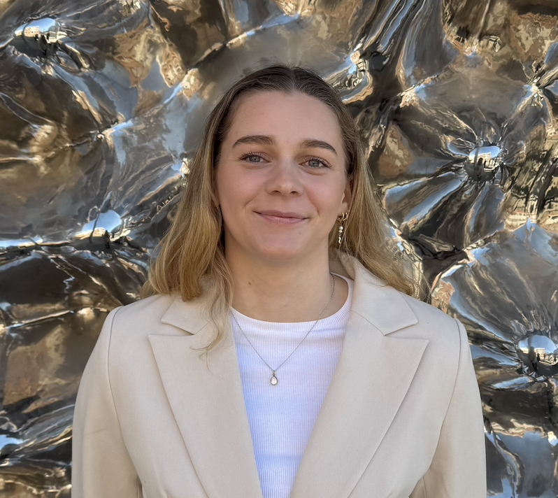

CV of Kristine B. Braathen
About Me
An ambitious full-stack developer passionate about building scalable, efficient, and user-friendly applications.
Currently pursuing a Master’s degree in Programming and System Architecture, with 3+ years of practical development
experience in both frontend and backend technologies. Former professional athlete, bringing discipline, teamwork,
and ability to perform under pressure to software development projects.

Education
2022–2025
Bachelor in Informatics: Design, Use, Interaction, University of Oslo
Relevant Coursework:
- Object oriented programming
- Interaction design
- User- and system requirements, UML-modeling
- App development
- Cognitive processes and learning
- Algorithms and runtime complexity
- Databases
- Information security
Link to my portfolio
2025–present
Master in Informatics: Programming and System Architecture, University of Oslo
Relevant Coursework:
- Distributed systems
- Development in Platform Ecosystems
- Quantitative performance analysis
Skills
- Programming Languages: Python, Java, Kotlin, C++, JavaScript, TypeScript
- Frontend Development: React, HTML, CSS
- Backend Development: Django, Node.js
- Databases: PostgreSQL
- Developer Tools: Git, Docker, Android Studio, Jetpack Compose, VS Code
- Design & Prototyping: Figma, Canva, ShapR3D
Work Experience
(Summer 2025)
Fullstack Developer, University of Oslo
- Contributed to the development of an interactive digital platform for the “Introduction to Computer Technology” course, aimed at first-year students.
- Implemented an adaptive algorithm to deliver tasks dynamically based on student performance, ensuring personalized difficulty progression.
- Utilized Python and TypeScript for core functionality, Django for backend, and React (TypeScript), CSS, and Vite for frontend development and bundling.
(August 2024 - now)
Leadership & PR – Student Organization, University of Oslo
- Previously served as PR responsible, now elected as Leader of the student organization IFI Rastløs.
- Designed and currently developing the organization’s official website with another member of the organization:
ifirastlos.no/events
- Organized multiple events, handling planning, booking, and promotion to increase student engagement.
(August 2024 - now)
Teaching Assistant, University of Oslo
- Held weekly lectures for classes of 20 students, and assisted with grading assignments and exams.
- Courses supported:
- Introduction to Interaction Design (IN1050)
- Systems, Requirements and Consequences (IN1030)
(September 2025 – present)
Event Support & Corporate Relations – Student Organization, University of Oslo
- Assist in organizing corporate events that connect companies with informatics students.
- Help facilitate networking opportunities, ensuring events run smoothly and according to plan.
- Contribute to building positive relationships between students, companies, and the IFI Navet community.
Languages
- Norwegian: Native
- English: Fluent
References
Available upon request.